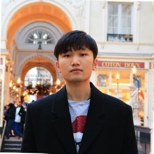

Researcher · PhD
I work at the intersection of machine learning and natural language processing, with a focus on speech deepfake detection.

01 — About
I am Hoan My Tran, a lecturer and researcher at the IUT de Lannion (University of Rennes), France. In March 2026, I defended my PhD thesis at the University of Rennes within the IRISA laboratory (Expression Team). My research was advised by Prof. Damien Lolive, Prof. François Goasdoué, Prof. Pierre-François Marteau, Asst. Prof. Arnaud Delhay-Lorrain, and Asst. Prof. Aghilas Sini.
Before my PhD, I obtained a Bachelor's degree from IUT de Villetaneuse (University Sorbonne Paris Nord), followed by an engineering master's degree with a specialization in software engineering from IMT Atlantique.
My research focuses on machine learning applied to speech, with a particular emphasis on speech deepfake detection. I am also interested in communicating scientific topics to the broader public and was invited as a TEDx speaker to discuss the risks and societal impact of deepfake technologies.
Research Interests
02 — Publications
KAN we make models simpler for Audio Deepfake Detection with Kolmogorov-Arnold Networks?
03 — Projects
LLM-Probe
A lightweight toolkit for running linear and nonlinear probing experiments on transformer hidden states across layers and tasks.
AdaLoRA-Bench
Benchmarking suite comparing parameter-efficient fine-tuning methods across model families, tasks, and compute budgets.
AlignData
Curated dataset and preprocessing scripts for human preference data, used in RLHF and reward model training research.
04 — CV
Education
University of Somewhere · Advised by Prof. John Smith
XYZ University · Graduated with Highest Honors
Awards & Honors
Experience
Big Research Lab · Vision-language model training
University of Somewhere
Service & Reviewing